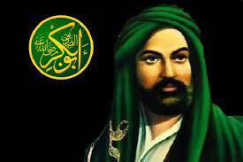
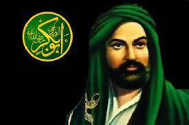

Artikel ini membahas mengenai sejarah peradaban islam pada masa khulafaur Rasyidin yang dimana pada saat itu pernah menjadi kholifah umat muslim di pemerintahan dan menggantikan nabi muhammad sebagai kepala pemerintahan pada saat zamannya. Khulafaur Rasyidin terdiri dari 4 khalifah yang mempunyai keistimewaan dan prestasinya masing masing selama menjabat sebagai khalifan, ke empat khalifah ini sangat berperan dalam perkembangan peradaban islam, yang dimana peran serta kontribusinya bisa dirasakan oleh umat muslim pada saat ini, pasang surut roda pemerintahan pun sudah pernah dialami oleh ke 4 khalifah ini, meskipun bisa terbilang sangat dekat dengan Nabi Muhammad tidak menjamin bahwasanya seluruh umat muslim mendukung dan menyetujui pemilihan khalifah tersebut, hal tersebut menjadi salah satu penghalang ketika khalifah menjabat sebagai kepala pemerintah. Pembahasan ebih lanjut akan di sampaikan di bawah ini.
Kata khulafaur Rasyidin jika diartikan secara harfiah yaitu pemimpin yang mendapat petunjuk, kata khulafaur Rasyidin ini ditunjukn kepada 4 sahabat nabi yaitu Abu Bakar Ash-Shidiq, Umar Bin Khattab, Utsman bin Affan, serta Ali bin Abi Thalib. Pencetus julukan tersebut ialah Umat muslim pada zaman itu yang sangat dekat dengan Rasulullh, dan mereka beranggapan bahwasanya julukan tersebut pantas didapatkan karena 4 tokoh Khalifah tersebut selalu mendampingi Rasulullah ketika sedang menjalankan roda pemerintahan serta membantu rasulullah menjalankan tugas nya sebagai kepala pemerintah. pemerintahan khulafaur Rasyidin berlangsung sejak tahun 632-661 M.
Secara etimologi khulafaurasyidin terbagi menjadi dua, yaitu Al-Khulafa yang arinya pemnganti atau pemimpin dan Al- Rasyidin yang mempunyai arti "dibimbing dengan benar".Secara menyeluruh mempunyai arti yaitu para pemimpin yang di bimbing dengan benar atau para pemimpin yang mendapat petunjuk.
 

Abu Bakar As-Shidiq merupakan salah satu sahabat Rasulullah SAW, beliau mempunyai nama lengkap Abdullah bin Abu Quhafah At-Tamimi atau bisa dikenal juga dengan Abu Ka'bah sebelum memeluk islam. beliau dilahirkan pada tahun 573 M dan wafat pada tanggal 23 Jmadil Akhir 13 H atau bertepatan dengan bulan Agustus 634 M yang pada saat itu berusia 63 tahun. Beliau masuk kedalam golongan orang yang pertama kali masuk islam kemudian gelar As-shidiq diberikan nabi Muhammad SAW dikarenakan beliau membenarkan tentang nabi Muhammad terutama pada peristiwa Isra Mi'ra.>
Setelah nabi wafat kaum muslimin sangat kehilangan sosok yang penting dalam kehidupan mereka, baik dalam peribadatan kepada Allah maupun pemerintahan, setelah wafatnya nabi terjadi kekosongan kepala pemerintahan, pada mulanya terdapat beberapa usulan dari tiap kaum yaitu kaum Anshar dan juga kaum Muhajirin, mereka saling menyebutkan siapa yang layak menjadi khalifah pemerintahan, dan mereka menginginkan khalifah tersebut dari kam mereka masing masing, pada akhirnya keputusan diberikan kepada kaum muhajirin yang menjadi khalifah, setelah semuanya menyetujui hal tersebut kemudian Abu Bakar dibaiat oleh Umar Bin Khattab dan kemudian dilanjutkan oleh seluruh umat muslim yang hadir di Saqifah pada saat itu. Selanjutnya abu bakar menyampaikan pidatonya yaitu taatlah kalian kepadaku sepanjang aku taat kepada Allah dan Rasulnya di tengah kalian, jika aku bermaksiat maka tidak wajib kalian taat kepadaku.
Ketika masa pemerintahan Abu Bakar Ash-Shiddiq banyak sekali permasalahan yang harus diurus dalam negeri, bahkan setelah nabi wafat banyak sekali bermunculan kelompok yang murtad, nabi palsu dan yang membangkang untuk bayar zakat. hal tersebut menjadikan persoalan yang perlu dimusyawarahkan ketika masa pemerintahannya. berdasarkan musyawarah tersebut Abu Bakar Ash-Shiddiq memutuskan untuk memerangi dan menumpas habiskan kelompok tersebut dan perang itu disebut dengan perang Riddah yang artinya (perang Melawan Kemurtadan).
Langkah selanjutnya yang diambil oleh Abu Bakar Ash-Shiddiq setelah menyelesaikan permasalah dalam negeri, yaitu melakukan ekspansi ke wilayah utara yang dimana dimaksudkan untuk melawan pasukan romawi dan persia yang selalu mengancam umat muslim. Akan tetapi sebelum misi ini terlaksana Abu Bakar Ash-Shiddiq meninggal dunia dan hanya mengemban pemerintahan selama kurang lebih 2 tahun.
Berikut ini merupakan beberapa prestasi atau perkembangan yang sudah dilakukan pada masa pemerintahan Abu Bakar Ash-Shiddiq.
1.Menerapkan budaya musyawarah yang demokratis antara pemerintahan dengan masyarakat.
2.Memupuk rasa loyalitas umat islam kepada pemerintah dan mendukung segala kebijakan yang dilakukan.
3.Setiap permasalahan dilakukan dan diselesaikan dengan musyawarah.
4.Membangun pemerintahan yang tertib baik di pemerintah pusat maupun daerah.
5.Mendirikan militer perang yang tangguh dan disiplin.
6.Menyusun dan Menyatukan mushaf AL- Quran
7.Membangun Baitu Mall
Pada masa khalifah Abu Bakar Ash-Shiddiq harta Baitul-Mal langsung disalurkan kepada kaum muslim dan tidak menumpuk, bahkan ketika Abu Bakar Ash-Shiddiq wafat hanya tersisa 1 dirham saja. semuanya dibagikan secara merata dari hasil pendapatan negara. berikut ini beberapa ciri ekonomi pada masa pemerintahan Abu Bakar Ash-Shiddiq.
a. Prinsip yang digunakan dalam proses perdagangan menggunakan praktik akad yang sesuai dengan syariah.
b. Hukum ditegakan bagi mereka yang tidak mau membayar zakat yaitu memerangi.
c. Ahli jabar tidak dijadikan sebagai pejabat negara serta tidak mengistimewakan ahli badar ketika pembagian kekayaan milik negara.
d.Barang tambang dikelola seperti emas, perak, besi, perunggu, baja dan menjadikannya sebagai penghasilan untuk negara.
e. Kebijakan Rasulullah dalam Jizyah tidak diubah.
f. Dalam distribusi kekayaan negara menggunakan prinsip persamaan.
g. Akurasi penghitungan zakat sangat diperhatikan

Nama lengkap dari Umar bin Khatthab adalah Umar bin Khatthab bin Nufail keturunan Abdul Uzza Al-Quraisy dari suku Adi. Beliau lahir di Mekkah empat tahun sebelum kelahiran Rasulullah Pada awalnya umar sangat membenci Nabi Muhammad kemudian umar masuk islam pada tahun kelima setelah kenabian dan sangat mencintai dan mendukung rasulullah bahkan menjadi salah satu sahabat yang sangat dekat dengan Rasulullah. Umar bin Khatthab merupakan khalifah kedua setelah Abu Bakar. Umar merupakan salah satu benteng bagi umat islam pada saat itu, ia menjadi orang kepercayaan rasulullah sekaligus menjadi penasehat utamanya. selain itu banyak sekali peran umar dalam perkembangan islam yang sampai ini kita rasakan.
Menurut riwayat umar memiliki postur tubuh yang tegap serta kuat, selain itu umar juga pemberani tak kenal gentar serta memiliki watak yang keras, meskipun demikian tuur kata umar halus serta bicaranya fasih. Peran umar pada masa permulaan bisa dibilang yang paling menonjol karena peran dari perluasan wilayah yang dilakukannya, dan menurut para sejarawan pada masa umar terjadi penaklukan secara besar-besaran.
Umar bin Khattab merupakan pemimpin yang disayangi oleh rakyat hal tersebut didapat karena perhatian serta tanggung jawabnya yang besar kepada rakyat tanpa memandang bulu. Bahkan menurut riwayat umar melakukan pengawasan serta pengecekan langsung ke pemukiman rakyat.
Proses terpilihnya Khalifah Umar bin Khattab merupakan hasil dari konsensus yang dicapai oleh para sahabat Nabi Muhammad SAW setelah wafatnya Khalifah Abu Bakar Ash-Shiddiq. Proses ini berlangsung pada tahun 634 Masehi.Setelah wafatnya Khalifah Abu Bakar, para sahabat berkumpul di Masjid Nabawi untuk membahas siapa yang akan menjadi penggantinya. Beberapa nama seperti Uthman bin Affan, Ali bin Abi Thalib, dan Umar bin Khattab muncul sebagai calon yang potensial.
Para sahabat kemudian melakukan musyawarah untuk mencapai kesepakatan. Ada beberapa perdebatan dan diskusi yang terjadi, namun akhirnya mayoritas sahabat sepakat untuk memilih Umar bin Khattab sebagai Khalifah. Pemilihan Umar bin Khattab didasarkan pada beberapa pertimbangan. Salah satunya adalah keahliannya dalam memimpin dan pengalamannya dalam berbagai urusan negara. Umar bin Khattab juga terkenal dengan keadilan dan ketegasannya dalam menjalankan amanah. Setelah terpilih, Umar bin Khattab dilantik sebagai Khalifah dan memimpin umat Islam selama 10 tahun. Pemerintahannya dianggap sebagai salah satu masa keemasan dalam sejarah Islam, di mana banyak perluasan wilayah Islam terjadi dan keadilan sosial ditegakkan. Proses terpilihnya Umar bin Khattab sebagai Khalifah melalui musyawarah dan konsensus menunjukkan pentingnya prinsip kepemimpinan yang demokratis dalam Islam. Keputusan ini merupakan hasil kesepakatan bersama para sahabat yang dianggap terbaik untuk kepentingan umat Islam pada saat itu.
Sebagai khalifah, Umar bin Khatab memiliki banyak prestasi yang mengesankan. Beberapa prestasi terpentingnya antara lain:
1. Ekspansi wilayah Islam: Umar bin Khatab memperluas wilayah kekuasaan Islam dengan menaklukkan Persia, Mesir, Suriah, dan sebagian besar wilayah Romawi. Ekspansi ini membantu penyebaran agama Islam dan memperluas pengaruh politik dan ekonomi umat Muslim.
2. Reformasi administrasi: Umar memperkenalkan reformasi administrasi yang signifikan dalam pemerintahan. Ia membagi wilayah kekuasaan menjadi provinsi-provinsi yang diperintah oleh gubernur yang diangkat olehnya sendiri. Umar juga memperkenalkan sistem pengawasan yang ketat untuk memastikan keadilan dan transparansi dalam pemerintahan.
3. Peningkatan keadilan sosial: Umar bin Khatab dikenal sebagai khalifah yang adil dan peduli terhadap kesejahteraan umat Muslim. Ia memperkenalkan berbagai kebijakan sosial yang bertujuan untuk mengatasi kesenjangan sosial dan memberikan perlindungan kepada masyarakat yang lemah.
4. Pengembangan hukum Islam: Umar bin Khatab juga berperan dalam pengembangan hukum Islam. Ia membentuk Majelis Konsultatif yang terdiri dari para ulama dan sahabat untuk membahas masalah-masalah hukum dan membuat keputusan berdasarkan ajaran Islam.
5. Peningkatan pendidikan: Umar memperhatikan pentingnya pendidikan dalam membangun masyarakat yang berkualitas. Ia mendirikan madrasah dan memperluas sistem pendidikan di wilayah kekuasaannya. Umar juga memberikan insentif kepada para pelajar, termasuk memberikan tunjangan kepada mereka yang menuntut ilmu.
Prestasi khalifah Umar bin Khatab ini membuatnya dianggap sebagai salah satu khalifah terbesar dalam sejarah Islam. Kepemimpinannya yang bijaksana dan adil telah memberikan kontribusi besar dalam memperluas dan memperkuat kekuasaan Islam pada masa itu.
Utsman bin Affan adalah salah satu sahabat Rasulullah SAW dan menjadi khalifah ketiga dalam sejarah Islam. Ia lahir pada tahun 579 M di Mekah, Arab Saudi, dan berasal dari keluarga Quraisy yang terpandang. Utsman adalah menantu Nabi Muhammad SAW, karena ia menikahi putri Rasulullah yang bernama Ruqayyah, dan setelah Ruqayyah meninggal, Utsman menikahi putri Rasulullah yang kedua bernama Umm Kulthum. Utsman dikenal sebagai seorang sahabat yang taat, dermawan, dan memiliki karakter yang lembut. Sebelum memeluk Islam, Utsman adalah seorang pedagang yang sukses dan memiliki kekayaan yang melimpah. Ia terkenal dengan kemurahan hati dan banyak menyumbangkan harta kekayaannya untuk kepentingan umat Muslim.
Utsman adalah salah satu sahabat yang termasuk dalam sepuluh sahabat yang dijamin masuk surga oleh Nabi Muhammad SAW. Ia berperan aktif dalam perang Badar, Uhud, dan Khandaq. Utsman juga terlibat dalam penulisan dan penyusunan Al-Quran pada masa kekhalifahan Abu Bakar dan Umar. Setelah Umar bin Khatab wafat pada tahun 644 M, Utsman terpilih menjadi khalifah. Pemerintahan Utsman berlangsung selama 12 tahun, dari tahun 644 M hingga tahun 656 M. Selama masa kepemimpinannya, Utsman memperluas wilayah kekuasaan Islam dengan menaklukkan wilayah-wilayah baru seperti Siprus, Armenia, dan Azerbaijan. Utsman juga terkenal karena penyusunan Mushaf Utsman, yaitu satu versi standar Al-Quran yang disusun berdasarkan salinan-salinan yang ada pada saat itu. Hal ini dilakukan untuk menghindari perbedaan bacaan dan penulisan Al-Quran yang dapat menyebabkan perpecahan di kalangan umat Muslim. Namun, masa kepemimpinan Utsman juga diwarnai oleh konflik dan ketegangan di kalangan umat Muslim. Beberapa kebijakan yang diambilnya menuai kritik dari sebagian umat Muslim, yang pada akhirnya memicu terjadinya peristiwa pembunuhan Utsman pada tahun 656 M.
Utsman bin Affan wafat pada usia 82 tahun sebagai seorang syahid. Meskipun masa kepemimpinannya berakhir dengan pembunuhan, ia tetap dihormati sebagai salah satu khalifah yang berjasa dalam memperluas dan memperkuat kekuasaan Islam serta meningkatkan kesejahteraan umat Muslim pada masa kepemimpinannya.
Proses pengangkatan Utsman bin Affan sebagai khalifah ketiga dalam sejarah Islam melibatkan konsultasi dan persetujuan dari para sahabat Rasulullah SAW. Berikut adalah rangkaian proses pengangkatannya:
Setelah terjadi pembunuhan khalifah Umar bin Khatab pada tahun 644 M, para sahabat Rasulullah berkumpul untuk memilih khalifah baru. Pertemuan ini disebut dengan "Majlis Syura" atau Dewan Konsultatif. Beberapa tokoh terkemuka seperti Ali bin Abi Thalib, Utsman bin Affan, Abdullah bin Umar, dan Abbas bin Abdul Muthalib hadir dalam pertemuan ini. Pada awalnya, terdapat perbedaan pendapat antara para sahabat tentang siapa yang seharusnya menjadi khalifah. Beberapa sahabat ingin Ali bin Abi Thalib menjadi khalifah, sementara yang lain memilih Utsman bin Affan. Terdapat juga beberapa usulan lain seperti Abdullah bin Umar. Dalam upaya untuk mencapai kesepakatan, para sahabat meminta Ali bin Abi Thalib dan Utsman bin Affan untuk memilih salah satu di antara mereka sebagai khalifah. Ali bin Abi Thalib menolak untuk menjadi khalifah dan memberikan dukungannya kepada Utsman bin Affan. Hal ini membuat mayoritas sahabat memilih Utsman sebagai khalifah.
Setelah mendapatkan persetujuan mayoritas sahabat, Utsman bin Affan secara resmi diangkat menjadi khalifah pada tahun 644 M. Ia menerima sumpah setia dari para sahabat dan diakui sebagai pemimpin umat Muslim. Proses pengangkatan Utsman sebagai khalifah tidak melibatkan pemilihan umum atau voting seperti yang kita kenal dalam sistem demokrasi modern. Pengangkatannya didasarkan pada konsultasi dan persetujuan dari para sahabat Rasulullah yang dianggap sebagai otoritas tertinggi dalam memilih khalifah.Utsman bin Affan kemudian memulai masa kepemimpinannya sebagai khalifah dan menjalankan tugas-tugas pemerintahan dengan bijaksana. Meskipun masa kepemimpinannya berakhir dengan pembunuhan, ia tetap dihormati sebagai salah satu khalifah yang berjasa dalam memperluas dan memperkuat kekuasaan Islam serta meningkatkan kesejahteraan umat Muslim pada masa kepemimpinannya.
Khalifah Utsman bin Affan memiliki beberapa prestasi yang signifikan selama masa kepemimpinannya. Berikut adalah beberapa prestasi pentingnya:
1. Ekspansi wilayah Islam: Utsman bin Affan melanjutkan ekspansi wilayah kekuasaan Islam yang dimulai oleh khalifah sebelumnya. Ia mengirim pasukan ekspedisi ke wilayah-wilayah baru seperti Siprus, Armenia, dan Azerbaijan. Hal ini membantu memperluas pengaruh politik dan agama Islam.
2. Pembangunan infrastruktur: Utsman memperhatikan pembangunan infrastruktur di wilayah kekuasaannya. Ia membangun jalan-jalan, memperbaiki sistem irigasi, dan membangun masjid-masjid. Peningkatan infrastruktur ini membantu meningkatkan kesejahteraan umat Muslim dan memperkuat kekuasaan Islam.
3. Penyusunan Mushaf Utsman: Salah satu prestasi terbesar Utsman adalah penyusunan Mushaf Utsman. Ia mengumpulkan salinan-salinan Al-Quran yang ada pada saat itu dan menyusunnya menjadi satu versi yang standar. Hal ini dilakukan untuk mencegah terjadinya perbedaan bacaan dan penulisan Al-Quran yang dapat menyebabkan perpecahan di kalangan umat Muslim.
4. Peningkatan kesejahteraan umat: Utsman dikenal sebagai khalifah yang dermawan dan peduli terhadap kesejahteraan umat Muslim. Ia memberikan bantuan kepada fakir miskin, membangun tempat-tempat pelayanan sosial, dan memberikan tunjangan kepada para pejuang dan pensiunan tentara.
5. Pembentukan lembaga pengadilan: Utsman memperkenalkan lembaga pengadilan yang bertujuan untuk memastikan keadilan dan penegakan hukum dalam masyarakat. Ia mengangkat hakim-hakim yang adil dan kompeten untuk menyelesaikan sengketa dan memutuskan perkara berdasarkan hukum Islam.
6. Peningkatan pendidikan: Utsman memperhatikan pentingnya pendidikan dalam membangun masyarakat yang berkualitas. Ia mendirikan madrasah dan memperluas sistem pendidikan di wilayah kekuasaannya. Utsman juga memberikan insentif kepada para pelajar, termasuk memberikan tunjangan kepada mereka yang menuntut ilmu.
Prestasi-prestasi ini membuat Utsman bin Affan dihormati sebagai salah satu khalifah yang berjasa dalam memperluas dan memperkuat kekuasaan Islam serta meningkatkan kesejahteraan umat Muslim pada masa kepemimpinannya.

Ali bin Abi Thalib adalah salah satu sahabat Rasulullah SAW dan menjadi khalifah keempat dalam sejarah Islam. Ia lahir pada tahun 599 M di Mekah, Arab Saudi, dan merupakan sepupu dan menantu Nabi Muhammad SAW. Ayahnya adalah Abu Thalib, paman Rasulullah SAW. Ali tumbuh dalam lingkungan yang penuh dengan kebajikan dan kejujuran. Ia dikenal sebagai seorang pemuda yang cerdas, berani, dan memiliki keberanian yang luar biasa. Ali adalah salah satu dari sedikit orang yang memeluk Islam pada usia sangat muda, yaitu sekitar 10 tahun. Ia menjadi salah satu sahabat paling setia dan dekat dengan Nabi Muhammad SAW.Ali terlibat dalam banyak perang dan pertempuran penting dalam sejarah Islam. Ia berperan aktif dalam Pertempuran Badar, Uhud, dan Khandak. Keberanian dan ketangguhannya dalam pertempuran membuatnya dihormati oleh seluruh umat Muslim.
Ali juga dikenal karena kebijaksanaan dan keadilan dalam menyelesaikan sengketa dan masalah di kalangan umat Muslim. Ia sering dijadikan sebagai hakim dalam perselisihan dan masalah hukum, dan keputusannya selalu berdasarkan hukum Islam dan keadilan. Pada tahun 656 M, setelah khalifah Utsman bin Affan dibunuh, Ali diangkat sebagai khalifah keempat. Pengangkatannya tidak berlangsung dengan mudah, karena terjadi perselisihan dan perpecahan di kalangan umat Muslim. Meskipun demikian, Ali menerima sumpah setia dari mayoritas umat Muslim dan memulai masa kepemimpinannya. Masa kekhalifahan Ali diwarnai oleh konflik dan pertikaian. Ia menghadapi pemberontakan dari kelompok yang tidak puas dengan kebijakan Utsman, yang dikenal sebagai "Pemberontakan Pertama". Ia juga terlibat dalam perang melawan kelompok Khawarij dan perang melawan Muawiyah bin Abi Sufyan. Pada tahun 661 M, Ali wafat sebagai syahid di kota Kufah, Iraq. Ia dibunuh oleh seorang Khawarij yang tidak setuju dengan kebijakan dan kepemimpinannya. Wafatnya Ali mengakhiri masa kepemimpinannya sebagai khalifah, tetapi ia tetap dihormati dan dianggap sebagai salah satu tokoh penting dalam sejarah Islam. Ali bin Abi Thalib dikenal sebagai tokoh yang berani, adil, dan berintegritas dalam melaksanakan tugas sebagai khalifah. Ia juga terkenal sebagai seorang pemikir, penyair, dan penulis. Kepemimpinannya dan kontribusinya dalam memperkuat dan memperluas kekuasaan Islam serta menjaga nilai-nilai keadilan masih diingat dan dihormati oleh umat Muslim hingga saat ini.
Proses pengangkatan Khalifah Ali bin Abi Thalib sebagai khalifah keempat dalam sejarah Islam melibatkan beberapa tahapan penting. Berikut adalah rangkaian proses pengangkatannya:
1. Kematian Khalifah Utsman bin Affan: Pengangkatan Ali sebagai khalifah terjadi setelah khalifah sebelumnya, yaitu Utsman bin Affan, dibunuh pada tahun 656 M. Setelah pembunuhan Utsman, terjadi ketidakstabilan politik dan perpecahan di kalangan umat Muslim.
2. Penunjukan oleh Utsman bin Affan: Sebelum wafat, Utsman bin Affan telah menunjuk Ali bin Abi Thalib sebagai salah satu anggota Dewan Penasihat yang bertugas untuk memilih khalifah berikutnya. Penunjukan ini menunjukkan bahwa Utsman memiliki kepercayaan pada Ali sebagai calon khalifah.
3. Pertemuan di Saqifah Bani Sa'idah: Setelah pembunuhan Utsman, para sahabat Rasulullah berkumpul di Saqifah Bani Sa'idah, yaitu sebuah tempat di Madinah, untuk membahas penggantian khalifah. Beberapa tokoh utama seperti Abu Bakar, Umar bin Khattab, dan Uthman bin Affan hadir dalam pertemuan ini.
4. Perselisihan dan penentangan: Saat pertemuan di Saqifah, terjadi perselisihan dan penentangan terhadap pengangkatan Ali sebagai khalifah. Beberapa sahabat dan kabilah-kabilah dari suku Quraisy lebih condong untuk memilih Abu Bakar atau Umar sebagai khalifah.
5. Pengangkatan oleh sebagian sahabat: Meskipun terdapat penentangan, sebagian sahabat yang mendukung Ali sebagai khalifah tetap bersikeras untuk mengangkatnya. Mereka meyakini bahwa Ali memiliki hak dan kecakapan untuk menjadi khalifah.
6. Sumpah setia: Ali menerima sumpah setia dari para pendukungnya dan sebagian sahabat yang mendukungnya sebagai khalifah. Meskipun pengangkatannya tidak mendapatkan persetujuan dari semua sahabat, Ali memulai masa kepemimpinannya sebagai khalifah keempat.
Proses pengangkatan Ali sebagai khalifah tidak berlangsung dengan mudah dan terjadi perselisihan di kalangan umat Muslim. Perselisihan ini mengakibatkan perpecahan dan pecahnya persatuan di dalam umat Islam. Pengangkatan Ali sebagai khalifah menjadi salah satu faktor yang memicu pertikaian dan perang saudara di masa yang akan datang dalam sejarah Islam.
Khalifah Ali bin Abi Thalib memiliki beberapa prestasi yang signifikan selama masa kepemimpinannya. Berikut adalah beberapa prestasi pentingnya:
1. Keadilan dan Ketegasan: Ali dikenal sebagai khalifah yang adil dan tegas dalam menegakkan hukum dan keadilan. Ia memperjuangkan hak-hak rakyat dan berusaha untuk menyelesaikan sengketa dengan cara yang adil. Ali juga mengedepankan prinsip-prinsip keadilan dalam memerintah.
2. Peningkatan Pendidikan: Ali memiliki perhatian yang besar terhadap pendidikan. Ia membangun madrasah dan memperluas sistem pendidikan di wilayah kekuasaannya. Ali juga memberikan insentif kepada para pelajar, termasuk memberikan tunjangan kepada mereka yang menuntut ilmu.
3. Ekspansi wilayah Islam: Ali terlibat dalam beberapa ekspedisi militer yang berhasil memperluas wilayah kekuasaan Islam. Salah satu prestasi terbesarnya adalah penaklukan Mesir pada tahun 639 M. Penaklukan ini membuka jalan bagi penyebaran agama Islam dan memperkuat kekuatan politik Islam.
4. Reformasi Administrasi: Ali melaksanakan reformasi administrasi untuk meningkatkan efisiensi pemerintahan. Ia memperbaiki sistem perpajakan, memperkuat keuangan negara, dan memperbaiki sistem pengawasan atas pejabat-pejabat pemerintahan. Reformasi ini membantu meningkatkan stabilitas dan kesejahteraan dalam wilayah kekuasaannya.
5. Penyusunan Hukum Islam: Ali berperan penting dalam penyusunan hukum Islam. Ia mengumpulkan dan mengorganisir hukum-hukum yang berlaku saat itu dalam Kitab al-Ahkam, yang menjadi salah satu sumber utama hukum Islam. Penyusunan ini membantu memperkuat sistem hukum dalam masyarakat Muslim.
6. Perhatian terhadap Kesejahteraan Rakyat: Ali memberikan perhatian yang besar terhadap kesejahteraan rakyat. Ia mengurangi pajak yang memberatkan rakyat, memberikan bantuan kepada fakir miskin, dan memperbaiki sistem distribusi kekayaan. Tindakan-tindakan ini membantu meningkatkan kesejahteraan umat Muslim di bawah kepemimpinannya.
Prestasi-prestasi ini membuat Ali bin Abi Thalib dihormati sebagai salah satu khalifah yang berjasa dalam memperluas dan memperkuat kekuasaan Islam serta meningkatkan kesejahteraan umat Muslim pada masa kepemimpinannya.
Dibuat Oleh Mohammad Fajar Ridotullah -Terimakasih sudah membaca dan menyimak isi dari tulisan ini, semoga bermanfaat-